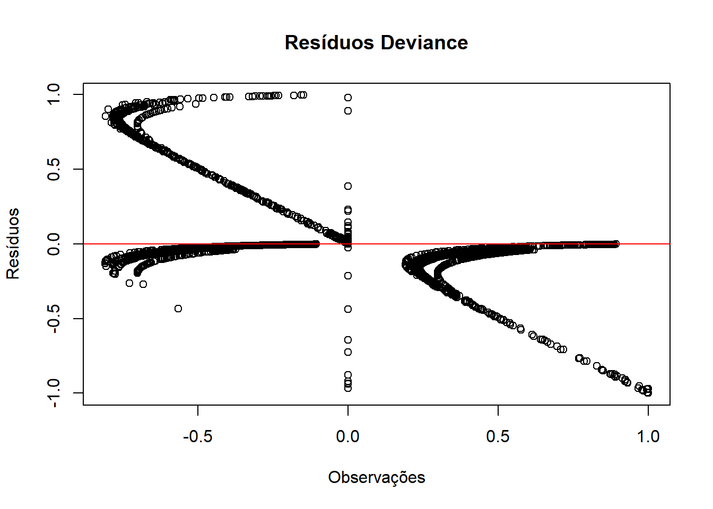
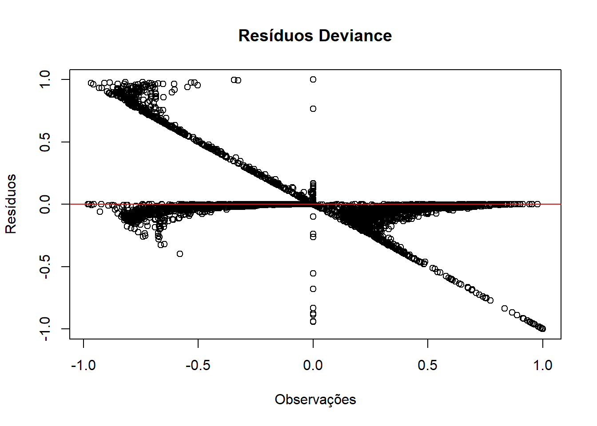

ℹ Using "','" as decimal and "'.'" as grouping mark. Use `read_delim()` for more control.
Rows: 5570 Columns: 10
── Column specification ────────────────────────────────────────────────────────
Delimiter: ";"
chr (3): tipo_regiao, bioma, koppen
dbl (7): muni_code, region, altitude, pop10, pop22, prop_residuo, prop_esgot
ℹ Use `spec()` to retrieve the full column specification for this data.
ℹ Specify the column types or set `show_col_types = FALSE` to quiet this message.
New names:
Rows: 5570 Columns: 31
── Column specification
──────────────────────────────────────────────────────── Delimiter: "," chr
(1): dengue_pattern dbl (30): ...1, geocode, temp_med_Autumn, umid_med_Autumn,
precip_tot_Autumn...
ℹ Use `spec()` to retrieve the full column specification for this data. ℹ
Specify the column types or set `show_col_types = FALSE` to quiet this message.
• `` -> `...1`
clima_org_model_10_16_season <- clima_org_model_10_16_season[, -1] # Exclui a primeira colunacolnames(clima_org_model_10_16_season)[1] <-"muni_code"# Renomeia a nova primeira coluna# Juntandodet_10_16 <-full_join(banco_determinantes, clima_org_model_10_16_season , by ="muni_code")det_10_16 <- det_10_16[, !names(det_10_16) %in%c("pop22")]## Removendo os bancos para a nálise ficar mais leveremove(banco_determinantes)remove(clima_org_model_10_16_season)
Análise 2010-2016
Análise do período de 2010-2016, primeira parte de uma série temporal da classificação de padrões de transmissão de todos os municípios brasileiros para dengue.
1.Carregando os dados
# Converter variáveis numéricas com vírgula decimal e categorizar as variáveis de textodet_10_16 <- det_10_16 %>%mutate(across(where(~all(grepl("^[0-9,.]+$", .))), ~as.numeric(gsub(",", ".", .))),across(where(is.character), as.factor))# Visão geral dos dadossummary(det_10_16)
muni_code region tipo_regiao
Min. :1100015 Min. :1.000 metropolitana : 445
1st Qu.:2512126 1st Qu.:2.000 nao metropolitana:5125
Median :3146280 Median :3.000
Mean :3253591 Mean :2.898
3rd Qu.:4119190 3rd Qu.:4.000
Max. :5300108 Max. :5.000
bioma altitude koppen pop10
amazonia : 503 Min. : 1.67 Aw :1337 Min. : 805
caatinga :1096 1st Qu.: 222.60 Cfa :1138 1st Qu.: 5235
cerrado :1063 Median : 427.60 As : 892 Median : 10934
mata atlantica:2739 Mean : 451.24 BSh : 420 Mean : 34278
pampa : 160 3rd Qu.: 650.83 Cwa : 407 3rd Qu.: 23424
pantanal : 9 Max. :1601.42 Cfb : 405 Max. :11253503
(Other): 971 NA's :5
prop_residuo prop_esgot dengue_pattern
Min. : 0.00 Min. : 0.00 Epidêmico : 642
1st Qu.: 54.33 1st Qu.: 12.85 Episódico :1722
Median : 74.08 Median : 38.03 Episódico/Epidêmico :2907
Mean : 70.21 Mean : 42.27 Sem transmissão : 286
3rd Qu.: 89.22 3rd Qu.: 70.44 Transmissão Persistente: 13
Max. :100.00 Max. :100.00
temp_med_Autumn umid_med_Autumn precip_tot_Autumn thr_temp_Autumn
Min. :12.90 Min. :52.73 Min. : 0.0 Min. : 0.00
1st Qu.:19.37 1st Qu.:72.58 1st Qu.: 700.7 1st Qu.:38.57
Median :22.72 Median :77.93 Median : 969.7 Median :84.43
Mean :22.25 Mean :76.60 Mean :1201.3 Mean :66.88
3rd Qu.:25.36 3rd Qu.:81.53 3rd Qu.:1619.1 3rd Qu.:92.00
Max. :28.18 Max. :91.90 Max. :5121.0 Max. :92.00
NA's :3 NA's :3
thr_umid_Autumn thr_prec_Autumn thr_temp_umid_Autumn temp_med_Spring
Min. : 0.00 Min. : 0.00 Min. : 0.00 Min. :15.39
1st Qu.:81.86 1st Qu.:18.00 1st Qu.:35.29 1st Qu.:21.58
Median :90.57 Median :23.43 Median :61.71 Median :24.37
Mean :83.54 Mean :26.76 Mean :58.77 Mean :24.06
3rd Qu.:91.86 3rd Qu.:31.71 3rd Qu.:86.00 3rd Qu.:26.29
Max. :92.00 Max. :88.57 Max. :92.00 Max. :31.28
NA's :3
umid_med_Spring precip_tot_Spring thr_temp_Spring thr_umid_Spring
Min. :42.80 Min. : 0.0 Min. : 0.00 Min. : 0.00
1st Qu.:67.09 1st Qu.: 700.2 1st Qu.:68.14 1st Qu.:64.29
Median :71.88 Median :1667.6 Median :89.14 Median :79.50
Mean :70.76 Mean :1443.3 Mean :77.53 Mean :71.55
3rd Qu.:76.70 3rd Qu.:2005.4 3rd Qu.:90.71 3rd Qu.:89.14
Max. :90.22 Max. :3257.9 Max. :90.71 Max. :90.71
NA's :3
thr_prec_Spring thr_temp_umid_Spring temp_med_Summer umid_med_Summer
Min. : 0.00 Min. : 0.00 Min. :18.47 Min. :55.31
1st Qu.:17.14 1st Qu.:46.14 1st Qu.:23.49 1st Qu.:74.01
Median :34.29 Median :62.57 Median :24.94 Median :77.75
Mean :30.18 Mean :59.01 Mean :24.67 Mean :76.77
3rd Qu.:40.57 3rd Qu.:74.14 3rd Qu.:25.94 3rd Qu.:80.86
Max. :78.43 Max. :90.71 Max. :28.77 Max. :91.60
NA's :3 NA's :3
precip_tot_Summer thr_temp_Summer thr_umid_Summer thr_prec_Summer
Min. : 0 Min. : 0.00 Min. : 0.00 Min. : 0.00
1st Qu.:1234 1st Qu.:88.43 1st Qu.:83.14 1st Qu.:27.57
Median :1861 Median :90.29 Median :87.43 Median :42.14
Mean :1884 Mean :87.28 Mean :82.16 Mean :41.55
3rd Qu.:2400 3rd Qu.:90.29 3rd Qu.:90.14 3rd Qu.:52.57
Max. :5920 Max. :90.29 Max. :90.29 Max. :88.86
thr_temp_umid_Summer temp_med_Winter umid_med_Winter precip_tot_Winter
Min. : 0.00 Min. :11.43 Min. :36.38 Min. : 0.0
1st Qu.:75.57 1st Qu.:18.17 1st Qu.:56.63 1st Qu.: 149.8
Median :84.57 Median :21.63 Median :69.07 Median : 396.7
Mean :79.21 Mean :21.50 Mean :66.70 Mean : 669.6
3rd Qu.:89.86 3rd Qu.:24.94 3rd Qu.:77.93 3rd Qu.:1020.8
Max. :90.29 Max. :30.04 Max. :90.85 Max. :3122.8
NA's :3 NA's :3
thr_temp_Winter thr_umid_Winter thr_prec_Winter thr_temp_umid_Winter
Min. : 0.00 Min. : 0.00 Min. : 0.000 Min. : 0.00
1st Qu.:21.46 1st Qu.:33.29 1st Qu.: 2.714 1st Qu.: 7.00
Median :74.50 Median :75.57 Median : 9.143 Median :16.71
Mean :59.09 Mean :61.54 Mean :13.717 Mean :31.09
3rd Qu.:92.00 3rd Qu.:90.43 3rd Qu.:23.429 3rd Qu.:49.43
Max. :92.00 Max. :92.00 Max. :82.571 Max. :92.00
2. Verificação dos pressupostos
2.1 Multicolinearidade
Cálculo do VIF (Variance Inflation Factor): O VIF foi calculado para cada variável preditora no modelo. Isso foi feito após a remoção de colinearidade redundante e tratamento das variáveis para garantir que todas estejam no formato correto (numérico ou categórico).
Variável dependente: dengue_pattern foi temporariamente convertida para numérica apenas para calcular o VIF. Esse ajuste é feito para facilitar a análise de multicolinearidade.
Detecção e remoção de colinearidade: Usamos o findLinearCombos para remover variáveis redundantes, evitando o problema de “aliasing” no modelo, o que ocorre quando variáveis altamente correlacionadas criam dependência linear.
Intrepretação:
Valores de VIF < 5: São considerados aceitáveis, indicando baixa multicolinearidade.
Valores de VIF entre 5 e 10: Indicariam alguma multicolinearidade, mas ainda podem ser aceitáveis dependendo do contexto.
Valores de VIF > 10: Sugerem multicolinearidade.
Resultados:
Quando todas as variáveis em um cálculo do VIF (Variance Inflation Factor) estão muito acima de 10, isso indica alta multicolinearidade entre as variáveis no seu modelo de regressão. Multicolinearidade pode distorcer os coeficientes das variáveis no modelo, dificultando a interpretação e reduzindo a confiabilidade dos resultados.
## Somente para variáveis numéricas então vamos retirar as categoricas# Remover colunas pelo nomedata <- det_10_16[, !names(det_10_16) %in%c("muni_code","region", "tipo_regiao", "bioma", "koppen")]# Verificando a presença de NAs em todas as variáveis do bancosapply(data, function(x) sum(is.na(x))) #Tem 8 linhas# removendo as linhas com Nadata_clean <- data %>%filter(!if_any(where(is.numeric), is.na))# Identificar e remover variáveis altamente colinearescombo_info <-findLinearCombos(data_clean %>%select(-dengue_pattern))if (length(combo_info$remove) >0) { data_clean <- data_clean[, -combo_info$remove]}# Calcular o VIF para as variáveis vif_values <-vif(lm(as.numeric(dengue_pattern) ~ ., data = data_clean))vif_values
2.2 Independência das observações
Intrepretação:
O valor 0 indica que não foram encontradas linhas duplicadas em data_clean.
# Verificar se há identificadores duplicadosduplicated_rows <-sum(duplicated(det_10_16))duplicated_rows
2.3 Tamanho amostral adequado
Interpretação:
Em regressão logística multinomial, cada categoria da variável dependente precisa de um número suficiente de observações para garantir que o modelo possa estimar os parâmetros de forma confiável. Geralmente, recomenda-se pelo menos 10 a 20 observações por parâmetro estimado em cada categoria.
O código retornou valor 0 nas observações, indicando que não foram encontrados outliers com resíduos padronizados maiores que 2 ou menores que -2. Isso sugere que o modelo se ajustou bem aos dados e não há observações que se desviem significativamente do padrão previsto pelo modelo.
# Ajustar o modelo multinomialmultinom_model <-multinom(dengue_pattern ~ ., data = det_10_16)# Calcular resíduos padronizadosresiduals <-residuals(multinom_model, type ="pearson")# Identificar outliers com resíduos padronizados acima de 2 ou abaixo de -2outliers <-which(abs(residuals) >2)length(outliers)##OUTRO# Obter os resíduos deviance para cada observaçãodeviance_residuals <-residuals(multinom_model, type ="deviance")# Ponto de corte padrão da literaturacutoff <-2.0influential_points <-which(abs(deviance_residuals) > cutoff)print(data[influential_points, ])
3. Ajuste do modelo de regressão logística multinomial
Interpretação:
Para cada categoria (em relação à referência “Episódico/Epidêmico”), o modelo estima coeficientes (Coefficients) para cada variável preditora. Esses coeficientes representam o efeito de cada variável sobre a probabilidade de estar nas categorias Sem transmissão, Episódico, Epidêmico e Tranmissão Persistente, em comparação com Episódico/Epidêmico.
# Remover colunas pelo nomedet_10_16 <- det_10_16[, !names(det_10_16) %in%c("muni_code")]det_10_16$region <-as.factor(det_10_16$region)# removendo as linhas com Nadet_10_16 <- det_10_16%>%filter(!if_any(where(is.numeric), is.na))# Definir a categoria de referência para todas as variáveis categóricasdet_10_16$dengue_pattern <-relevel(det_10_16$dengue_pattern, ref ="Episódico/Epidêmico") # variável dependente# Variáveis independentessummary(det_10_16)
region tipo_regiao bioma altitude
1: 449 metropolitana : 442 amazonia : 502 Min. : 1.67
2:1791 nao metropolitana:5120 caatinga :1096 1st Qu.: 223.09
3:1668 cerrado :1062 Median : 427.82
4:1188 mata atlantica:2733 Mean : 451.61
5: 466 pampa : 160 3rd Qu.: 651.09
pantanal : 9 Max. :1601.42
koppen pop10 prop_residuo prop_esgot
Aw :1336 Min. : 805 Min. : 0.00 Min. : 0.00
Cfa :1135 1st Qu.: 5235 1st Qu.: 54.33 1st Qu.: 12.82
As : 891 Median : 10934 Median : 74.08 Median : 37.99
BSh : 420 Mean : 34289 Mean : 70.21 Mean : 42.24
Cwa : 407 3rd Qu.: 23491 3rd Qu.: 89.22 3rd Qu.: 70.43
Cfb : 405 Max. :11253503 Max. :100.00 Max. :100.00
(Other): 968
dengue_pattern temp_med_Autumn umid_med_Autumn
Episódico/Epidêmico :2904 Min. :12.90 Min. :52.73
Epidêmico : 641 1st Qu.:19.38 1st Qu.:72.56
Episódico :1720 Median :22.72 Median :77.92
Sem transmissão : 284 Mean :22.25 Mean :76.59
Transmissão Persistente: 13 3rd Qu.:25.36 3rd Qu.:81.53
Max. :28.18 Max. :91.90
precip_tot_Autumn thr_temp_Autumn thr_umid_Autumn thr_prec_Autumn
Min. : 192.9 Min. : 0.1429 Min. :15.29 Min. : 3.714
1st Qu.: 700.9 1st Qu.:38.7143 1st Qu.:81.86 1st Qu.:18.000
Median : 969.7 Median :84.4286 Median :90.57 Median :23.429
Mean :1201.5 Mean :66.9245 Mean :83.58 Mean :26.764
3rd Qu.:1619.1 3rd Qu.:92.0000 3rd Qu.:91.86 3rd Qu.:31.714
Max. :5121.0 Max. :92.0000 Max. :92.00 Max. :88.571
thr_temp_umid_Autumn temp_med_Spring umid_med_Spring precip_tot_Spring
Min. : 0.1429 Min. :15.39 Min. :42.80 Min. : 29.18
1st Qu.:35.2857 1st Qu.:21.59 1st Qu.:67.09 1st Qu.: 701.78
Median :61.7143 Median :24.37 Median :71.88 Median :1668.10
Mean :58.8089 Mean :24.06 Mean :70.76 Mean :1444.09
3rd Qu.:86.0000 3rd Qu.:26.29 3rd Qu.:76.69 3rd Qu.:2006.38
Max. :92.0000 Max. :31.28 Max. :90.22 Max. :3257.91
thr_temp_Spring thr_umid_Spring thr_prec_Spring thr_temp_umid_Spring
Min. : 2.00 Min. : 3.429 Min. : 0.00 Min. : 1.857
1st Qu.:68.18 1st Qu.:64.286 1st Qu.:17.14 1st Qu.:46.143
Median :89.14 Median :79.500 Median :34.29 Median :62.571
Mean :77.59 Mean :71.581 Mean :30.20 Mean :59.039
3rd Qu.:90.71 3rd Qu.:89.143 3rd Qu.:40.57 3rd Qu.:74.143
Max. :90.71 Max. :90.714 Max. :78.43 Max. :90.714
temp_med_Summer umid_med_Summer precip_tot_Summer thr_temp_Summer
Min. :18.47 Min. :55.31 Min. : 236.3 Min. :17.57
1st Qu.:23.49 1st Qu.:73.99 1st Qu.:1234.9 1st Qu.:88.43
Median :24.94 Median :77.74 Median :1860.9 Median :90.29
Mean :24.67 Mean :76.76 Mean :1884.6 Mean :87.33
3rd Qu.:25.94 3rd Qu.:80.86 3rd Qu.:2400.6 3rd Qu.:90.29
Max. :28.77 Max. :91.60 Max. :5920.1 Max. :90.29
thr_umid_Summer thr_prec_Summer thr_temp_umid_Summer temp_med_Winter
Min. :22.43 Min. : 5.286 Min. :17.57 Min. :11.43
1st Qu.:83.14 1st Qu.:27.571 1st Qu.:75.71 1st Qu.:18.18
Median :87.43 Median :42.143 Median :84.57 Median :21.63
Mean :82.20 Mean :41.561 Mean :79.25 Mean :21.51
3rd Qu.:90.14 3rd Qu.:52.571 3rd Qu.:89.86 3rd Qu.:24.94
Max. :90.29 Max. :88.857 Max. :90.29 Max. :30.04
umid_med_Winter precip_tot_Winter thr_temp_Winter thr_umid_Winter
Min. :36.38 Min. : 0.9508 Min. : 0.00 Min. : 0.00
1st Qu.:56.63 1st Qu.: 149.8904 1st Qu.:21.57 1st Qu.:33.32
Median :69.05 Median : 396.6532 Median :74.57 Median :75.57
Mean :66.69 Mean : 669.4524 Mean :59.14 Mean :61.56
3rd Qu.:77.92 3rd Qu.:1020.5051 3rd Qu.:92.00 3rd Qu.:90.43
Max. :90.85 Max. :3122.7667 Max. :92.00 Max. :92.00
thr_prec_Winter thr_temp_umid_Winter
Min. : 0.000 Min. : 0.000
1st Qu.: 2.714 1st Qu.: 7.143
Median : 9.143 Median :16.714
Mean :13.716 Mean :31.113
3rd Qu.:23.429 3rd Qu.:49.429
Max. :82.571 Max. :92.000
region tipo_regiao bioma altitude
1: 449 nao metropolitana:5120 mata atlantica:2733 Min. : 1.67
2:1791 metropolitana : 442 amazonia : 502 1st Qu.: 223.09
3:1668 caatinga :1096 Median : 427.82
4:1188 cerrado :1062 Mean : 451.61
5: 466 pampa : 160 3rd Qu.: 651.09
pantanal : 9 Max. :1601.42
koppen pop10 prop_residuo prop_esgot
Aw :1336 Min. : 805 Min. : 0.00 Min. : 0.00
Cfa :1135 1st Qu.: 5235 1st Qu.: 54.33 1st Qu.: 12.82
As : 891 Median : 10934 Median : 74.08 Median : 37.99
BSh : 420 Mean : 34289 Mean : 70.21 Mean : 42.24
Cwa : 407 3rd Qu.: 23491 3rd Qu.: 89.22 3rd Qu.: 70.43
Cfb : 405 Max. :11253503 Max. :100.00 Max. :100.00
(Other): 968
dengue_pattern temp_med_Autumn umid_med_Autumn
Episódico/Epidêmico :2904 Min. :12.90 Min. :52.73
Epidêmico : 641 1st Qu.:19.38 1st Qu.:72.56
Episódico :1720 Median :22.72 Median :77.92
Sem transmissão : 284 Mean :22.25 Mean :76.59
Transmissão Persistente: 13 3rd Qu.:25.36 3rd Qu.:81.53
Max. :28.18 Max. :91.90
precip_tot_Autumn thr_temp_Autumn thr_umid_Autumn thr_prec_Autumn
Min. : 192.9 Min. : 0.1429 Min. :15.29 Min. : 3.714
1st Qu.: 700.9 1st Qu.:38.7143 1st Qu.:81.86 1st Qu.:18.000
Median : 969.7 Median :84.4286 Median :90.57 Median :23.429
Mean :1201.5 Mean :66.9245 Mean :83.58 Mean :26.764
3rd Qu.:1619.1 3rd Qu.:92.0000 3rd Qu.:91.86 3rd Qu.:31.714
Max. :5121.0 Max. :92.0000 Max. :92.00 Max. :88.571
thr_temp_umid_Autumn temp_med_Spring umid_med_Spring precip_tot_Spring
Min. : 0.1429 Min. :15.39 Min. :42.80 Min. : 29.18
1st Qu.:35.2857 1st Qu.:21.59 1st Qu.:67.09 1st Qu.: 701.78
Median :61.7143 Median :24.37 Median :71.88 Median :1668.10
Mean :58.8089 Mean :24.06 Mean :70.76 Mean :1444.09
3rd Qu.:86.0000 3rd Qu.:26.29 3rd Qu.:76.69 3rd Qu.:2006.38
Max. :92.0000 Max. :31.28 Max. :90.22 Max. :3257.91
thr_temp_Spring thr_umid_Spring thr_prec_Spring thr_temp_umid_Spring
Min. : 2.00 Min. : 3.429 Min. : 0.00 Min. : 1.857
1st Qu.:68.18 1st Qu.:64.286 1st Qu.:17.14 1st Qu.:46.143
Median :89.14 Median :79.500 Median :34.29 Median :62.571
Mean :77.59 Mean :71.581 Mean :30.20 Mean :59.039
3rd Qu.:90.71 3rd Qu.:89.143 3rd Qu.:40.57 3rd Qu.:74.143
Max. :90.71 Max. :90.714 Max. :78.43 Max. :90.714
temp_med_Summer umid_med_Summer precip_tot_Summer thr_temp_Summer
Min. :18.47 Min. :55.31 Min. : 236.3 Min. :17.57
1st Qu.:23.49 1st Qu.:73.99 1st Qu.:1234.9 1st Qu.:88.43
Median :24.94 Median :77.74 Median :1860.9 Median :90.29
Mean :24.67 Mean :76.76 Mean :1884.6 Mean :87.33
3rd Qu.:25.94 3rd Qu.:80.86 3rd Qu.:2400.6 3rd Qu.:90.29
Max. :28.77 Max. :91.60 Max. :5920.1 Max. :90.29
thr_umid_Summer thr_prec_Summer thr_temp_umid_Summer temp_med_Winter
Min. :22.43 Min. : 5.286 Min. :17.57 Min. :11.43
1st Qu.:83.14 1st Qu.:27.571 1st Qu.:75.71 1st Qu.:18.18
Median :87.43 Median :42.143 Median :84.57 Median :21.63
Mean :82.20 Mean :41.561 Mean :79.25 Mean :21.51
3rd Qu.:90.14 3rd Qu.:52.571 3rd Qu.:89.86 3rd Qu.:24.94
Max. :90.29 Max. :88.857 Max. :90.29 Max. :30.04
umid_med_Winter precip_tot_Winter thr_temp_Winter thr_umid_Winter
Min. :36.38 Min. : 0.9508 Min. : 0.00 Min. : 0.00
1st Qu.:56.63 1st Qu.: 149.8904 1st Qu.:21.57 1st Qu.:33.32
Median :69.05 Median : 396.6532 Median :74.57 Median :75.57
Mean :66.69 Mean : 669.4524 Mean :59.14 Mean :61.56
3rd Qu.:77.92 3rd Qu.:1020.5051 3rd Qu.:92.00 3rd Qu.:90.43
Max. :90.85 Max. :3122.7667 Max. :92.00 Max. :92.00
thr_prec_Winter thr_temp_umid_Winter
Min. : 0.000 Min. : 0.000
1st Qu.: 2.714 1st Qu.: 7.143
Median : 9.143 Median :16.714
Mean :13.716 Mean :31.113
3rd Qu.:23.429 3rd Qu.:49.429
Max. :82.571 Max. :92.000
# Modelo com tudomultinom_model <-multinom(dengue_pattern ~ ., data = det_10_16)
# weights: 260 (204 variable)
initial value 8951.693669
iter 10 value 6757.106187
iter 20 value 6351.253687
iter 30 value 6153.978580
iter 40 value 6072.260924
iter 50 value 6016.914924
iter 60 value 5925.507424
iter 70 value 5828.098696
iter 80 value 5723.426208
iter 90 value 5342.581581
iter 100 value 4852.714552
final value 4852.714552
stopped after 100 iterations
Interpretação do Teste de razão de verossimilhança:
# Pseudo R²pR2(multinom_model)# Teste de razão de verossimilhançalrtest(multinom_model)
5. Seleção de variáveis
Interpretação:
# Seleção stepwise#step_model <- step(multinom_model, direction = "both")#summary(step_model)# Seleção stepwise a partir do modelo nulo# Criar o modelo inicial (nulo com region e pop10)null_model <-multinom(dengue_pattern ~ region + pop10, data = det_10_16)# Criar o modelo completo (com todas as variáveis preditoras adicionais)full_formula <-as.formula(paste("dengue_pattern ~ region + pop10 +", paste(setdiff(names(det_10_16), c("dengue_pattern", "region", "pop10")), collapse =" + ")))full_model <-multinom(full_formula, data = det_10_16)# Aplicar a seleção stepwise a partir do modelo nulo para o modelo completostep_model <-step(null_model, scope =list(lower = null_model, upper = full_model), direction ="both", trace =TRUE)# Resumo do modelo final selecionadosummary(step_model)
5.1 Matriz de confusão do stepwise
class(step_model)step_model <-na.omit(step_model)# previsoesprevisoes <-predict(step_model, newdata = det_10_16)# matriz de confusão comparando as previsões com os valores reaismatriz_confusao <-confusionMatrix(previsoes, det_10_16$dengue_pattern)print(matriz_confusao)
6. Análise de resíduos
# Resíduos devianceresiduals_deviance <-residuals(step_model, type ="deviance")plot(residuals_deviance, main ="Resíduos Deviance", ylab ="Resíduos", xlab ="Observações")abline(h =0, col ="red")### OUTRO# Calcular os resíduos devianceresiduals_deviance <-residuals(step_model, type ="deviance")# Função para gerar um QQ plot com envelopeqqPlot(residuals_deviance, main ="QQ Plot dos Resíduos com Envelope de Confiança",xlab ="Quantis Teóricos",ylab ="Resíduos",id =FALSE, # Desativar a identificação de pontosenvelope =0.95) # Adicionar envelope de confiança de 95%
Reanalizando modelo final
Nessa parte vamos olhar para o modelo final e rodar manualmente cada colocando variaveis em grupo e criar uma tabela de AIC e Acurácia, para ve se o modelo se enxuga. Depois gerar o gráfico de ODDS. Ratio.
# weights: 150 (116 variable)
initial value 8951.693669
iter 10 value 6915.973043
iter 20 value 5917.252172
iter 30 value 5808.728035
iter 40 value 5520.916430
iter 50 value 4903.950546
iter 60 value 4545.461405
iter 70 value 4247.445143
iter 80 value 3864.489544
iter 90 value 3720.117552
iter 100 value 3586.158088
final value 3586.158088
stopped after 100 iterations
model_final <-na.omit(model_final)# previsoesprevisoes <-predict(model_final, newdata = det_10_16)# matriz de confusão comparando as previsões com os valores reaismatriz_confusao <-confusionMatrix(previsoes, det_10_16$dengue_pattern)print(matriz_confusao)
Confusion Matrix and Statistics
Reference
Prediction Episódico/Epidêmico Epidêmico Episódico
Episódico/Epidêmico 2521 303 631
Epidêmico 63 335 2
Episódico 319 0 1037
Sem transmissão 1 0 50
Transmissão Persistente 0 3 0
Reference
Prediction Sem transmissão Transmissão Persistente
Episódico/Epidêmico 18 0
Epidêmico 0 5
Episódico 158 0
Sem transmissão 108 0
Transmissão Persistente 0 8
Overall Statistics
Accuracy : 0.7208
95% CI : (0.7088, 0.7325)
No Information Rate : 0.5221
P-Value [Acc > NIR] : < 2.2e-16
Kappa : 0.5186
Mcnemar's Test P-Value : NA
Statistics by Class:
Class: Episódico/Epidêmico Class: Epidêmico
Sensitivity 0.8681 0.52262
Specificity 0.6418 0.98578
Pos Pred Value 0.7259 0.82716
Neg Pred Value 0.8167 0.94066
Prevalence 0.5221 0.11525
Detection Rate 0.4533 0.06023
Detection Prevalence 0.6244 0.07282
Balanced Accuracy 0.7550 0.75420
Class: Episódico Class: Sem transmissão
Sensitivity 0.6029 0.38028
Specificity 0.8758 0.99034
Pos Pred Value 0.6849 0.67925
Neg Pred Value 0.8313 0.96743
Prevalence 0.3092 0.05106
Detection Rate 0.1864 0.01942
Detection Prevalence 0.2722 0.02859
Balanced Accuracy 0.7394 0.68531
Class: Transmissão Persistente
Sensitivity 0.615385
Specificity 0.999459
Pos Pred Value 0.727273
Neg Pred Value 0.999099
Prevalence 0.002337
Detection Rate 0.001438
Detection Prevalence 0.001978
Balanced Accuracy 0.807422
# Resíduos devianceresiduals_deviance <-residuals(model_final, type ="deviance")plot(residuals_deviance, main ="Resíduos Deviance", ylab ="Resíduos", xlab ="Observações")abline(h =0, col ="red")
Modelo nulo
## Modelo nulom1 <-multinom(formula = dengue_pattern ~ region + pop10 , data = det_10_16)
# weights: 35 (24 variable)
initial value 8951.693669
iter 10 value 5663.222836
iter 20 value 5360.962316
iter 30 value 4868.819309
iter 40 value 4733.226025
iter 50 value 4671.607151
iter 60 value 4659.460909
iter 70 value 4647.773646
iter 80 value 4641.789333
final value 4641.775110
converged
m1 <-na.omit(m1)# previsoesprevisoes_m1 <-predict(m1, newdata = det_10_16)# matriz de confusão comparando as previsões com os valores reaismatriz_confusao_m1 <-confusionMatrix(previsoes_m1, det_10_16$dengue_pattern)print(matriz_confusao_m1)
Confusion Matrix and Statistics
Reference
Prediction Episódico/Epidêmico Epidêmico Episódico
Episódico/Epidêmico 2516 387 998
Epidêmico 59 232 0
Episódico 329 20 722
Sem transmissão 0 0 0
Transmissão Persistente 0 2 0
Reference
Prediction Sem transmissão Transmissão Persistente
Episódico/Epidêmico 36 0
Epidêmico 0 8
Episódico 248 0
Sem transmissão 0 0
Transmissão Persistente 0 5
Overall Statistics
Accuracy : 0.6248
95% CI : (0.6119, 0.6375)
No Information Rate : 0.5221
P-Value [Acc > NIR] : < 2.2e-16
Kappa : 0.3189
Mcnemar's Test P-Value : NA
Statistics by Class:
Class: Episódico/Epidêmico Class: Epidêmico
Sensitivity 0.8664 0.36193
Specificity 0.4654 0.98638
Pos Pred Value 0.6391 0.77592
Neg Pred Value 0.7612 0.92229
Prevalence 0.5221 0.11525
Detection Rate 0.4524 0.04171
Detection Prevalence 0.7078 0.05376
Balanced Accuracy 0.6659 0.67416
Class: Episódico Class: Sem transmissão
Sensitivity 0.4198 0.00000
Specificity 0.8446 1.00000
Pos Pred Value 0.5474 NaN
Neg Pred Value 0.7648 0.94894
Prevalence 0.3092 0.05106
Detection Rate 0.1298 0.00000
Detection Prevalence 0.2371 0.00000
Balanced Accuracy 0.6322 0.50000
Class: Transmissão Persistente
Sensitivity 0.384615
Specificity 0.999640
Pos Pred Value 0.714286
Neg Pred Value 0.998560
Prevalence 0.002337
Detection Rate 0.000899
Detection Prevalence 0.001259
Balanced Accuracy 0.692127
# Resíduos devianceresiduals_deviance_m1 <-residuals(m1, type ="deviance")plot(residuals_deviance_m1, main ="Resíduos Deviance", ylab ="Resíduos", xlab ="Observações")abline(h =0, col ="red")

Modelo nulo + regiao
coloca uma a uma
m2 <-multinom(formula = dengue_pattern ~ region + pop10 + bioma + koppen + altitude + tipo_regiao, data = det_10_16)
# weights: 110 (84 variable)
initial value 8951.693669
iter 10 value 6480.604305
iter 20 value 5674.629069
iter 30 value 5231.155189
iter 40 value 4872.416096
iter 50 value 4612.928947
iter 60 value 4400.286410
iter 70 value 4269.785271
iter 80 value 4196.318863
iter 90 value 4183.417499
iter 100 value 4173.059918
final value 4173.059918
stopped after 100 iterations
m2 <-na.omit(m2)# previsoesprevisoes_m2 <-predict(m2, newdata = det_10_16)# matriz de confusão comparando as previsões com os valores reaismatriz_confusao_m2 <-confusionMatrix(previsoes_m2, det_10_16$dengue_pattern)print(matriz_confusao_m2)
Confusion Matrix and Statistics
Reference
Prediction Episódico/Epidêmico Epidêmico Episódico
Episódico/Epidêmico 2424 346 766
Epidêmico 52 281 0
Episódico 427 12 916
Sem transmissão 1 0 38
Transmissão Persistente 0 2 0
Reference
Prediction Sem transmissão Transmissão Persistente
Episódico/Epidêmico 32 0
Epidêmico 0 8
Episódico 202 0
Sem transmissão 50 0
Transmissão Persistente 0 5
Overall Statistics
Accuracy : 0.6609
95% CI : (0.6483, 0.6734)
No Information Rate : 0.5221
P-Value [Acc > NIR] : < 2.2e-16
Kappa : 0.4057
Mcnemar's Test P-Value : NA
Statistics by Class:
Class: Episódico/Epidêmico Class: Epidêmico
Sensitivity 0.8347 0.43838
Specificity 0.5696 0.98781
Pos Pred Value 0.6794 0.82405
Neg Pred Value 0.7593 0.93105
Prevalence 0.5221 0.11525
Detection Rate 0.4358 0.05052
Detection Prevalence 0.6415 0.06131
Balanced Accuracy 0.7022 0.71309
Class: Episódico Class: Sem transmissão
Sensitivity 0.5326 0.17606
Specificity 0.8332 0.99261
Pos Pred Value 0.5883 0.56180
Neg Pred Value 0.7993 0.95724
Prevalence 0.3092 0.05106
Detection Rate 0.1647 0.00899
Detection Prevalence 0.2799 0.01600
Balanced Accuracy 0.6829 0.58433
Class: Transmissão Persistente
Sensitivity 0.384615
Specificity 0.999640
Pos Pred Value 0.714286
Neg Pred Value 0.998560
Prevalence 0.002337
Detection Rate 0.000899
Detection Prevalence 0.001259
Balanced Accuracy 0.692127
# Resíduos devianceresiduals_deviance_m2 <-residuals(m2, type ="deviance")plot(residuals_deviance_m2, main ="Resíduos Deviance", ylab ="Resíduos", xlab ="Observações")abline(h =0, col ="red")
# weights: 75 (56 variable)
initial value 8951.693669
iter 10 value 6700.821050
iter 20 value 5953.205656
iter 30 value 5860.630940
iter 40 value 5681.182417
iter 50 value 4778.312709
iter 60 value 4043.875484
iter 70 value 3909.666011
iter 80 value 3891.433444
iter 90 value 3884.505647
iter 100 value 3883.773445
final value 3883.773445
stopped after 100 iterations
m3 <-na.omit(m3)# previsoesprevisoes_m3 <-predict(m3, newdata = det_10_16)# matriz de confusão comparando as previsões com os valores reaismatriz_confusao_m3 <-confusionMatrix(previsoes_m3, det_10_16$dengue_pattern)print(matriz_confusao_m3)
Confusion Matrix and Statistics
Reference
Prediction Episódico/Epidêmico Epidêmico Episódico
Episódico/Epidêmico 2482 356 650
Epidêmico 51 281 0
Episódico 370 2 1005
Sem transmissão 1 0 65
Transmissão Persistente 0 2 0
Reference
Prediction Sem transmissão Transmissão Persistente
Episódico/Epidêmico 19 0
Epidêmico 0 7
Episódico 152 0
Sem transmissão 113 0
Transmissão Persistente 0 6
Overall Statistics
Accuracy : 0.6988
95% CI : (0.6866, 0.7109)
No Information Rate : 0.5221
P-Value [Acc > NIR] : < 2.2e-16
Kappa : 0.4782
Mcnemar's Test P-Value : NA
Statistics by Class:
Class: Episódico/Epidêmico Class: Epidêmico
Sensitivity 0.8547 0.43838
Specificity 0.6144 0.98821
Pos Pred Value 0.7077 0.82891
Neg Pred Value 0.7946 0.93107
Prevalence 0.5221 0.11525
Detection Rate 0.4462 0.05052
Detection Prevalence 0.6305 0.06095
Balanced Accuracy 0.7345 0.71330
Class: Episódico Class: Sem transmissão
Sensitivity 0.5843 0.39789
Specificity 0.8636 0.98750
Pos Pred Value 0.6573 0.63128
Neg Pred Value 0.8227 0.96823
Prevalence 0.3092 0.05106
Detection Rate 0.1807 0.02032
Detection Prevalence 0.2749 0.03218
Balanced Accuracy 0.7240 0.69269
Class: Transmissão Persistente
Sensitivity 0.461538
Specificity 0.999640
Pos Pred Value 0.750000
Neg Pred Value 0.998740
Prevalence 0.002337
Detection Rate 0.001079
Detection Prevalence 0.001438
Balanced Accuracy 0.730589
# Resíduos devianceresiduals_deviance_m3 <-residuals(m3, type ="deviance")plot(residuals_deviance_m3, main ="Resíduos Deviance", ylab ="Resíduos", xlab ="Observações")abline(h =0, col ="red")

Gerando gráfico Odds Ratio
Agora com modelo com melhor AIC e acurácia
Or e IC95%
# Obter os coeficientes do modelocoeficientes <-summary(model_final)$coefficientserro_padrao <-summary(model_final)$standard.errors# Calcular OR, IC 95% e p-valoresOR <-exp(coeficientes)IC_inf <-exp(coeficientes -1.96* erro_padrao)IC_sup <-exp(coeficientes +1.96* erro_padrao)p_valor <-2* (1-pnorm(abs(coeficientes / erro_padrao)))# Criar tabela com OR, IC 95% e p-valortabela_resultado <-cbind(OR, IC_inf, IC_sup, p_valor)# Arredondar para 2 casas decimaistabela_resultado <-round(tabela_resultado, 2)# Exibir a tabelatabela_resultado
# geral# Extraindo os coeficientes do modelo multinomial com intervalo de confiançatidy_model <- broom::tidy(model_final, conf.int =TRUE)# Filtrando apenas os coeficientes das variáveis preditoras (removendo a categoria base)tidy_model <- tidy_model %>%filter(term !="(Intercept)")# Convertendo os coeficientes log-OR para OR e arredondando para 3 casas decimaistidy_model <- tidy_model %>%mutate(estimate =round(pmin(exp(estimate), 3), 3), # Limita os valores acima de 3 para 3conf.low =round(pmax(exp(conf.low), 0), 3), # Garante que conf.low nunca seja menor que 0conf.high =round(pmin(exp(conf.high), 3), 3) # Limita os valores acima de 3 para 3 )# Definindo os valores fixos do eixo Xx_breaks <-c(0, 0.1, 1, 2, 3) # Apenas 1 casa decimalx_labels <-format(round(x_breaks, 1), nsmall =1) # Formata com 1 casa decimal# Criando o gráfico de forest plotggplot(tidy_model, aes(x = estimate, y = term)) +geom_point(color ="darkgreen", size =3) +# Pontos dos ORsgeom_errorbarh(aes(xmin = conf.low, xmax = conf.high), height =0.2, color ="darkgreen") +# Barras de errogeom_vline(xintercept =1, linetype ="dashed", color ="gray") +# Linha vertical em OR = 1scale_x_continuous(breaks = x_breaks,labels = x_labels,limits =c(0, 3) # Limita a escala até 3 ) +labs(x ="Odds Ratio (OR)", y ="", title ="Forest Plot - Modelo Multinomial") +theme_minimal()
Warning: Removed 23 rows containing missing values or values outside the scale range
(`geom_errorbarh()`).
Warning: Since gt v0.6.0 the `fmt_missing()` function is deprecated and will soon be
removed.
• Use the `sub_missing()` function instead.
This warning is displayed once every 8 hours.
Tabela 1: Modelo de Regressão Logística Multinomial
Odds Ratio, Intervalo de Confiança 95% e p-valor para dengue_pattern